부동산 사진·영상을 AI로 다시 만들어 주기
영상은 흔한 실수 하나로 시작해요. AI로 돈을 벌겠다며 자기 도구나 AI 스타트업을 만들려는 거예요. 진행자 Mark Tilbury는 그런 시도의 99%가 수백만 달러를 투자받은 큰 회사에 밀려난다고 말해요. 게스트 E-Man(영상 소개로는 수십억 달러 규모 AI 회사의 투자자이자 자문)의 답은 이래요. 모든 사업체가 AI를 써야 한다는 건 알지만 거의 아무도 쓰는 법을 몰라요. 그래서 진짜 돈은 이미 있는 AI 도구를 가져다 사업체의 일에 붙여 주는 사람에게 가요.
이 대목에서 화면에는 Fortune 기사 제목이 지나가요. 노란 형광펜으로 'MIT 보고서: 기업의 생성형 AI 시범 사업 95%가 실패하고 있다'가 칠해져 있어요. 기업들이 AI를 도입하려다 제대로 굴리지 못한다는 맥락으로 쓰인 화면이에요.
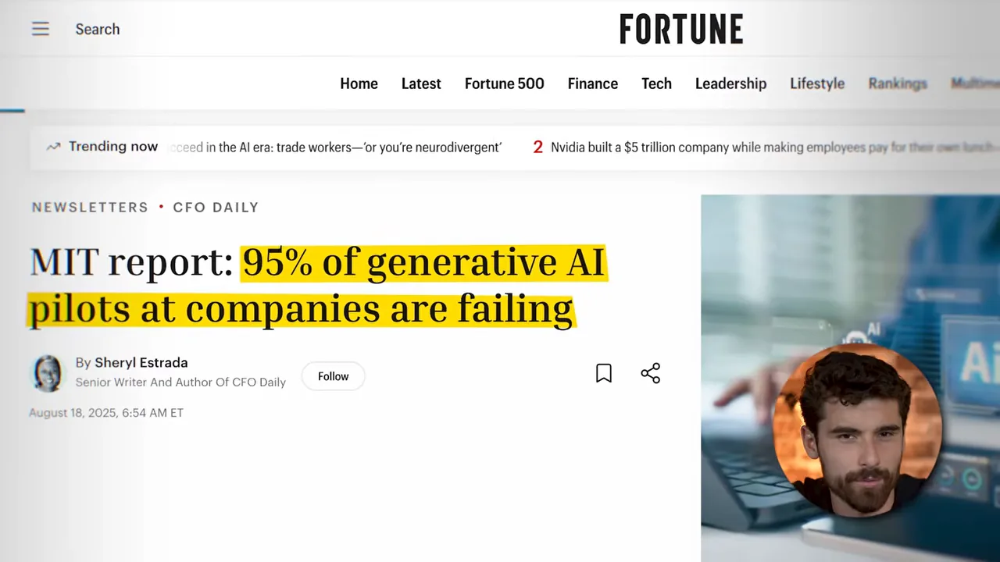
두 사람은 방법을 하나씩 소개하고, 책상 위 티어 리스트 판에 붙여 등급을 매겨요. 아래 판 왼쪽에 S부터 F까지 색 띠가 있고, 오른쪽에 1부터 7까지 번호 카드가 놓여 있어요. 등급을 매기는 기준은 매번 같아요. 얼마나 버는지, 얼마나 빨리 시작하는지, 경쟁이 얼마나 심한지, 그리고 단점이에요.
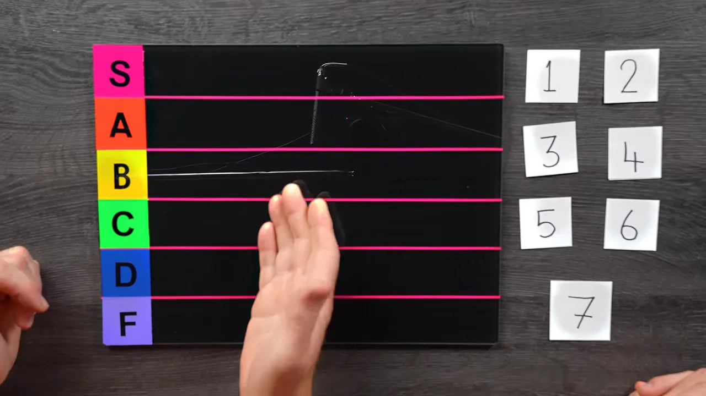
왜 부동산 사진인가요
첫 방법은 E-Man이 소개해요. 부동산 매물과 숙소 사진을 AI로 근사하게 바꿔 주고 돈을 받는 일이에요. 중개인과 집주인은 사진이 구매자나 손님이 처음 보는 것이라는 걸 알아요. 그런데 대부분 조명도 각도도 엉망인 급한 폰 사진이에요. 문의가 줄어드는 걸 알면서도 전문 사진가를 부를 시간과 예산이 없어요. 아래 화면이 그 차이를 보여 줘요. 같은 현관을 찍은 'Amateur'(아마추어) 사진은 문과 식탁을 한 장에 넣으려다 흰 벽이 갈색으로 나왔어요. 'Professional'(전문가) 사진은 복도와 수납을 시원하게 담았어요.
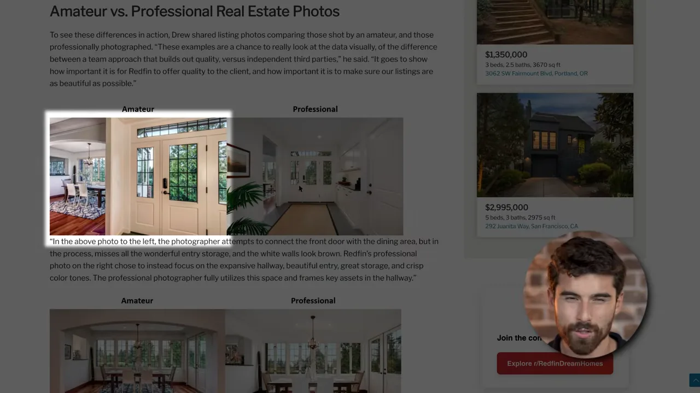
시연: 매물 사진을 고르고, AI로 고쳐요
먼저 아무 매물 사이트에 들어가요. 시연은 Airbnb이고, Zillow, Property24, Booking.com도 괜찮다고 해요. 아래 화면은 'Flat near US embassy London'이라는 런던 숙소예요. 침실 사진이 어둡고 구도가 어색해요. 이런 매물을 찾는 게 첫 단계예요.
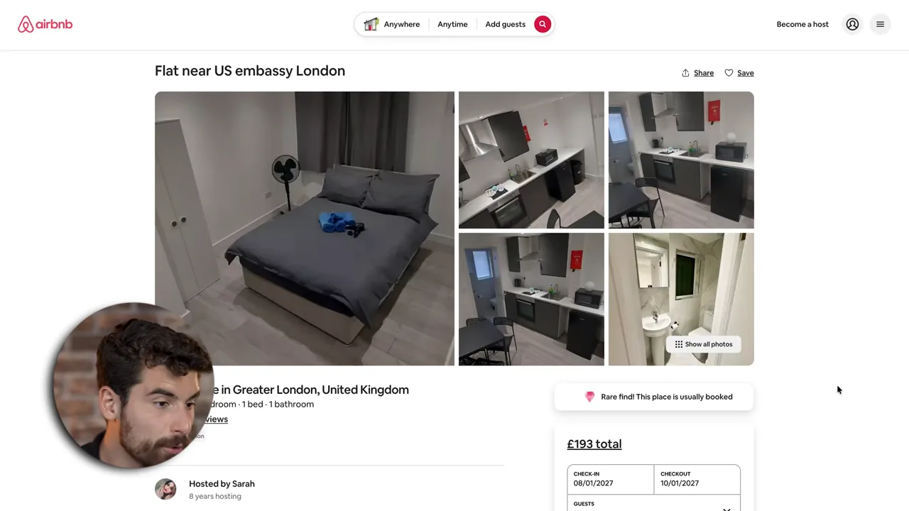
다음으로 그 사진들을 Higgsfield 같은 AI 이미지 생성 플랫폼에 넣고 간단한 프롬프트로 개선해요. 아래 화면 하단 입력창에 원본 사진 두 장이 첨부돼 있고, 모델 선택 칸에 'GPT Image 2.5 Sunburst'가 보여요.
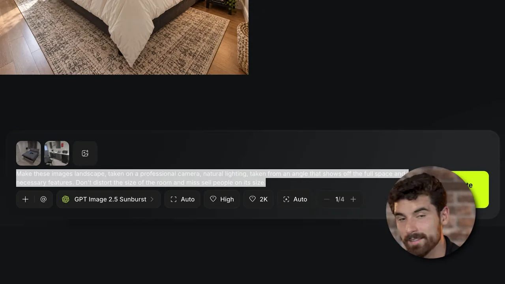
결과가 아래 사진이에요. 같은 침실이 밝은 자연광, 정리된 침구, 넓어 보이는 구도로 바뀌었어요. 영상은 여기서 한 걸음 더 나가, 같은 사진들로 시네마틱 워크스루 영상까지 만들 수 있다고 보여 줘요.
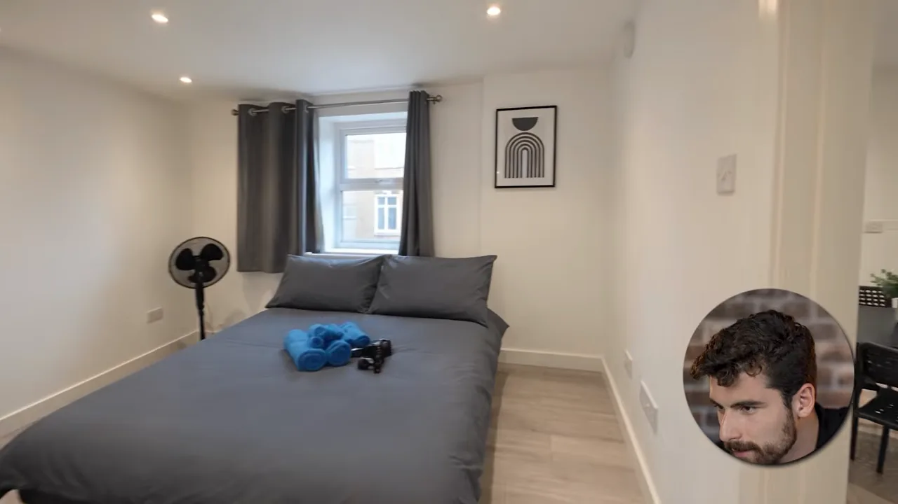
왜 돈을 내고, 어떻게 첫 고객을 잡나요
중개인이나 호스트가 돈을 내는 이유는 두 가지예요. 첫째, 사진과 영상이 좋으면 문의가 늘고, 문의가 늘면 예약과 판매가 늘어요. 둘째, 대부분이 생각 못 하는 '시간'이에요. 워크스루 영상이 첫 방문을 대신해 줘서, 구조가 마음에 안 드는 사람은 집에서 걸러져요. 중개인은 주말을 정말 관심 있는 사람에게만 써요.
고객 목록은 이미 매물 사이트에 이름·이메일·전화번호와 함께 있어요. 영상이 제안하는 순서는 아래 할 일 목록 그대로예요. 사진이 나쁜 매물 몇 곳을 골라 고친 뒤 전후 비교를 무료 샘플로 보내요. 이건 싸고 빨라서 여러 중개인에게 할 수 있어요. 워크스루 영상은 생성 비용이 더 드니 공짜로 뿌리지 말고, 예시용으로 하나만 만들어 둬요. 중개인이 사진에 반응하면 그 영상을 보여 주며 추가 상품으로 제안해요.
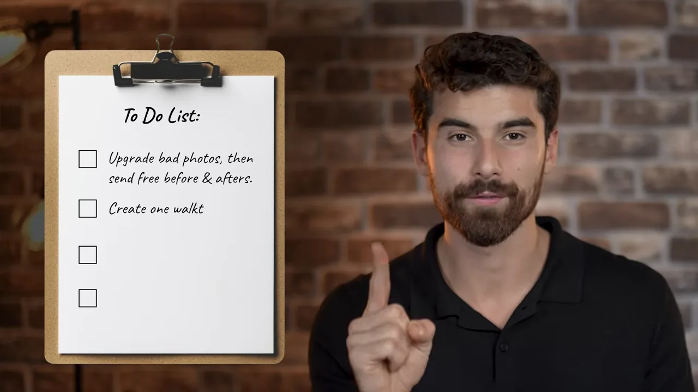
얼마나 벌고, 몇 등급인가요
E-Man은 솔직하게 말해요. 영상 하나에 수천 달러를 받는 일은 아니에요. 아래 화면의 가격표처럼 워크스루 영상과 개선 사진 묶음이 100달러 정도예요. 하지만 원가가 크레딧 몇 달러라 마진이 커요.
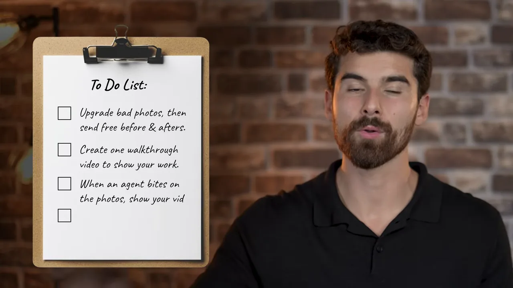
매물이 많은 고객이 늘면 월 고정 계약(리테이너)으로 바꿀 수 있고, 그러면 월 5천~1만 달러까지 간다고 해요. 백만장자가 되진 않지만 탄탄한 시작이라는 거예요.
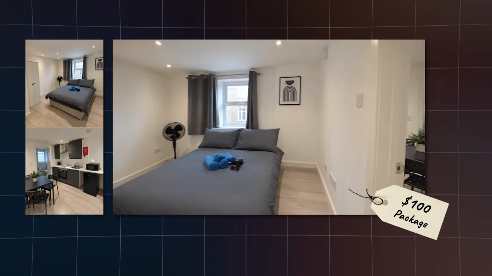
시작은 빨라요. 노트북과 Higgsfield 같은 플랫폼 구독이면 이번 주에 첫 고객을 잡을 수 있고, 첫 일감이 도구값을 열 배로 갚아 준다고 해요. 경쟁은 지금은 낮아요. AI 사진·영상 생성이 얼마나 좋아졌는지 아직 모르는 사람이 많기 때문인데, 소문이 나면 이 창은 닫혀요. 단점은 서비스라는 점이에요. 내 시간이 곧 상품이라 많이 벌수록 일하는 시간도 늘어요. 그래서 B등급이에요.
긴 영상 하나를 여러 채널용 글로 나눠 주기
두 번째 방법은 Mark가 소개해요. 모든 크리에이터의 지난 콘텐츠에는 금광이 묻혀 있는데 대부분 모른다는 거예요. 크리에이터, 팟캐스터, 사업가는 이미 주간 팟캐스트나 유튜브 영상 같은 긴 콘텐츠를 내고 있어요. 그걸 뉴스레터, 짧은 영상, X 게시물, LinkedIn 글로 바꿔야 새 독자를 만난다는 것도 알아요. 하지만 못 하고 있어요.
'그냥 ChatGPT에 붙여 넣으면 되지 않나?' 싶지만 그렇지 않아요. AI에게 그 사람이 실제로 어떻게 말하는지 알려 주지 않으면, 아무도 읽고 싶지 않은 일반적이고 로봇 같은 글이 나와요. 바쁜 사람들은 그걸 제대로 세팅할 시간이 없어요. 그 세팅이 돈을 받는 부분이에요.
시연: 녹취를 받고, Claude에 고객 전용 작업실을 만들어요
1단계는 긴 콘텐츠를 만드는 크리에이터나 사업체를 고르는 거예요. 시연에서 Mark는 자기 경제 채널 'Mark Tilbury Economics'의 영상을 써요. 2단계는 녹취(트랜스크립트)를 받는 거예요. 아래 화면은 AI 녹취 플랫폼의 'Transcribe files' 창이에요. URL(Uniform Resource Locator) 탭에 유튜브 주소를 넣고, 언어 감지와 오디오 이벤트 표시 같은 옵션을 고른 뒤 실행해요. 전체 녹취를 꽤 싸게 받을 수 있다고 해요.
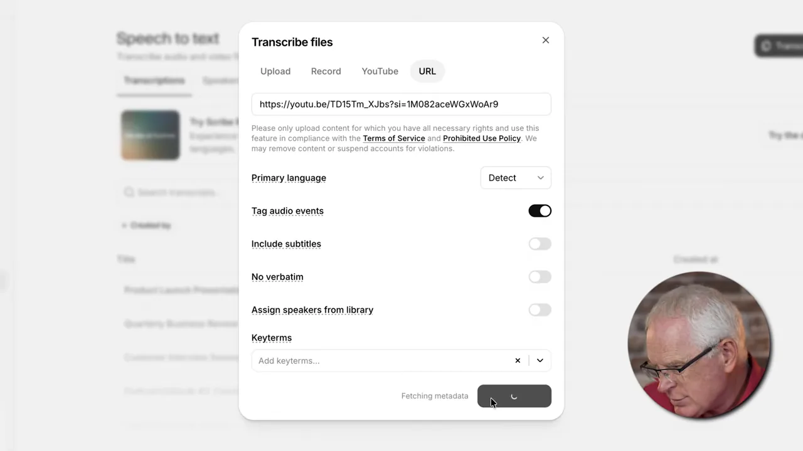
3단계가 핵심이에요. 고객 전용 AI 작업 공간을 만들어요. Claude에 로그인해 새 프로젝트를 만들고 고객 이름을 붙여요. 아래 화면 'Create a project'의 첫 칸에 'Marks economics'라고 적었어요.
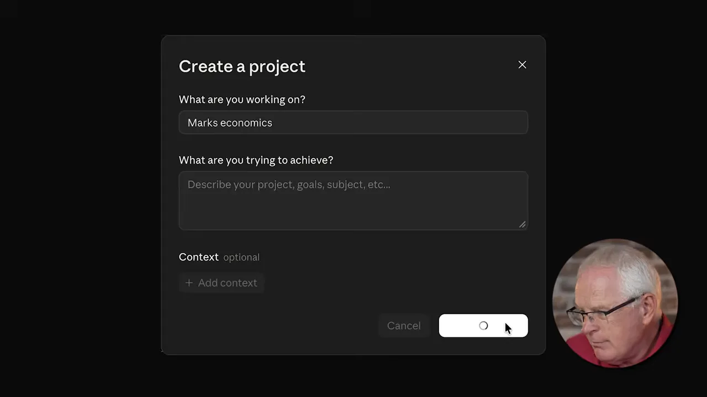
그다음이 중요한 부분이에요. 파일 추가로 고객에 관해 찾을 수 있는 자료를 모두 넣고, 프로젝트 지침(Set project instructions)에 원하는 걸 정확히 적어요. 아래 화면의 지침은 이렇게 구체적이에요. 'Mark's Economics의 콘텐츠 재가공 도우미로서, 녹취를 붙여 넣을 때마다 ① 뉴스레터 ② 강한 훅이 있는 짧은 영상 대본 다섯 개 ③ X 게시물 다섯 개 ④ LinkedIn 글 세 개로 바꿔. 첨부 파일의 말투에 맞추고, 그 사람의 실제 생각과 예시만 쓰고, 주장이나 인용을 지어내지 마.'
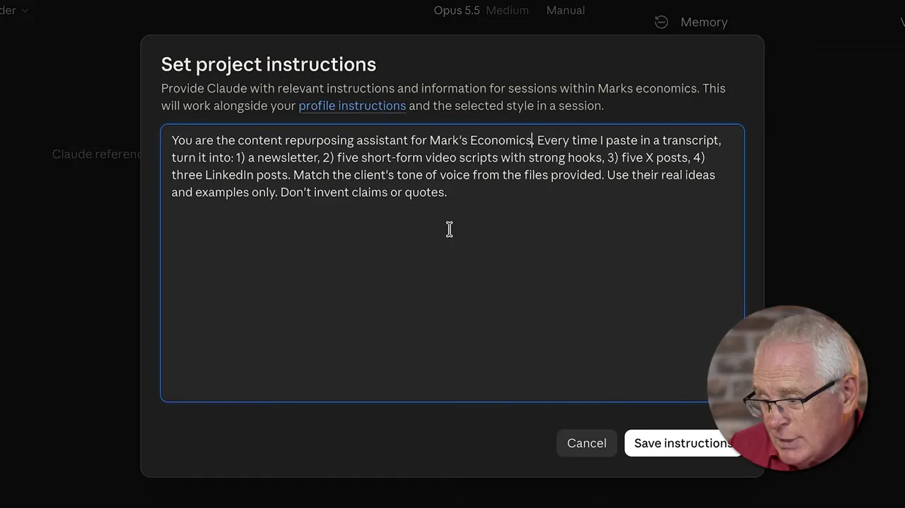
4단계는 녹취를 붙여 넣고 Claude에게 맡기는 거예요. 아래 결과 화면에 'Script 2 — Who really set your mortgage rate'(누가 진짜 내 주택담보대출 금리를 정했나) 같은 짧은 영상 대본이 '훅', 본문, '화면 자막' 구성으로 나와 있어요. 영상 하나에서 뉴스레터, 짧은 영상 대본, X·LinkedIn 글이 모두 고객 말투로, 몇 분 만에 나왔어요.
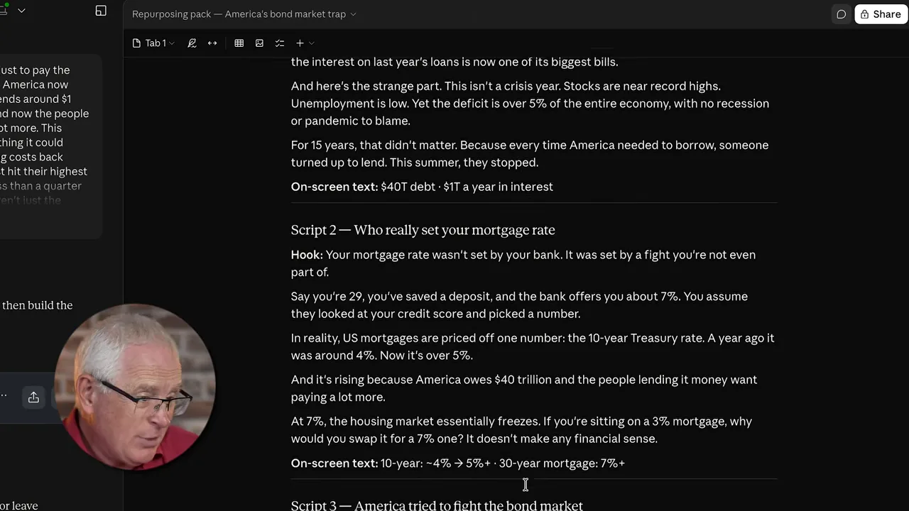
첫 고객 잡기와 판정
긴 콘텐츠를 매주 올리는 크리에이터와 팟캐스터는 수천 명이고, 누가 활발한지 다 보여요. 아래 할 일 목록처럼 한 플랫폼에만 많이 올리고 다른 곳은 비어 있는 사람을 찾아요. 팟캐스트는 훌륭한데 뉴스레터가 없는 사람 같은 경우예요. 그 사람의 최근 에피소드 하나를 재가공해 무료 샘플로 보내요.
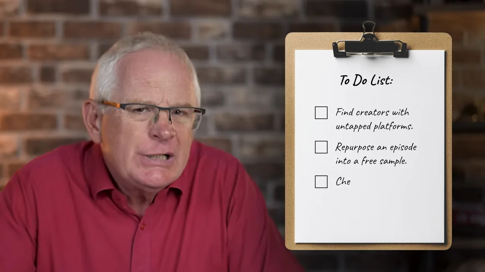
보내기 전에는 전부 꼼꼼히 읽고, 어색한 곳을 고치고, 사실이 맞는지 확인해요. Mark는 이 품질 관리가 결국 고객이 돈을 내는 이유라고 말해요.
수입은 보통 월 단위예요. 한 달에 만드는 콘텐츠 양과 질에 따라 고객당 월 수백~수천 달러라, 고객 몇 명만 잡아도 제대로 된 수입이 된다고 해요. 비용은 Claude 구독과 녹취 도구 정도로, 고객 하나면 충분히 메워요. 글을 읽을 줄 알고 좋은 글과 지루한 글을 구분할 수 있으면 며칠 안에 시작할 수 있어요. 경쟁은 꽤 있어요. 이미 에이전시와 프리랜서가 하고 있고 도구가 쉬워서 사람이 더 몰려요. 하지만 대부분은 녹취를 붙여 넣고 나온 그대로 보내요. 제대로 세팅해 고객 말투를 맞추면 눈에 띈다는 거예요. 단점은 첫 방법처럼 서비스라 시간이 상품이라는 점이지만, 아주 간단해서 A등급이에요.
묵혀 둔 문의 고객을 AI 문자로 다시 깨우기
세 번째 방법은 다시 E-Man이에요. 모든 사업체에는 한때 '관심 있어요'라고 했다가 연락이 끊긴 사람들 목록이 있어요. 문의 양식을 채우거나, 메시지를 보내거나, 가격을 물으려 전화한 사람은 모두 '리드(lead)'가 돼요. 하지만 대부분은 사지 않아요. 치과, 헬스장, 지붕 수리, 피부 시술 업체에는 이런 리드가 수백, 많게는 수천 명씩 엑셀에 쌓여 먼지만 쌓이고 있어요.
E-Man은 이게 말이 안 된다고 해요. 이미 관심을 보인 사람들이라, 관심을 끄는 가장 어렵고 비싼 단계는 이미 끝났어요. 그러니 이 '죽은 리드'는 바닥에 떨어진 돈이고, 그걸 줍는 게 일이에요. 그리고 앞의 두 방법이 모두 '많이 벌수록 시간이 더 드는' 서비스였다면, 이 방법은 AI가 무거운 일을 대신해서 그 한계를 덜어요.
시연: 리드를 올리고, 문자를 쓰고, 답장은 AI가 받아요
1단계는 옛 리드 목록을 문자를 보낼 수 있는 AI 도구에 올리는 거예요. 시연은 HighLevel이고, 치과용 가짜 리드 목록을 만들어 썼어요. 아래 Imports 화면에서 'Contacts'(연락처)를 고르고 Start → Upload → Map → Verify 네 단계로 목록을 올려요. 실제로는 업체가 CRM(Customer Relationship Management)이나 엑셀에 이미 가진 목록이에요.
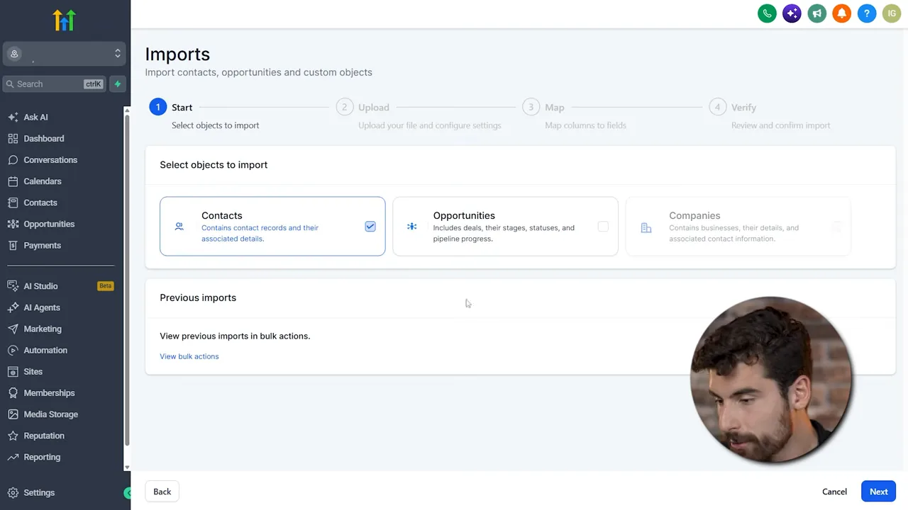
2단계는 AI로 자연스러운 메시지를 쓰는 거예요. E-Man이 Claude와 잠깐 이것저것 해 보니 아래 문자가 나왔어요. '안녕하세요 Sarah, Bright Smile 치과예요. 예전에 남겨 주신 연락처를 봤어요. 그 검진, 아직 받아 보실 생각 있으세요?' Claude는 그 아래에, 자동 캠페인이 아니라 실제 사람이 보낸 문자처럼 읽히게 가볍게 썼고, 답하기 쉬운 예/아니요 질문으로 끝냈다고 설명해요.
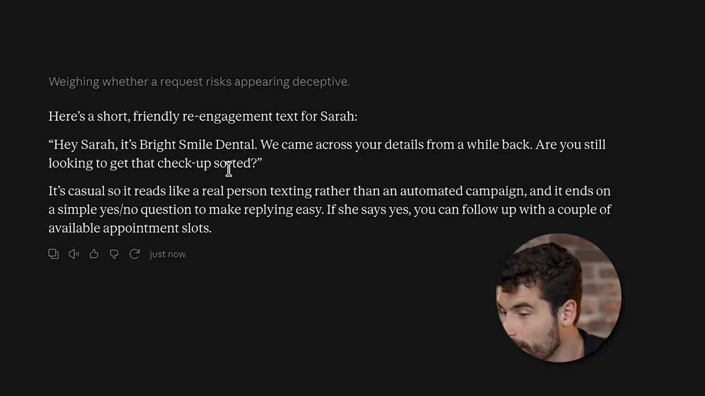
3단계는 Sarah가 답장하면 AI가 대화를 이어 가게 하는 거예요. 이런 AI 봇을 가진 앱이 많고, HighLevel의 것은 'Conversation AI'예요. 아래 화면에서 새 에이전트를 만들 때 'Prompt Based Agent'(지시문으로 만드는 방식)와 'Flow Based Builder'(흐름을 그려 만드는 방식) 중 하나를 골라요. 에이전트에게 어떤 업체인지, 서비스와 가격이 뭔지, 목표가 뭔지(여기서는 예약 잡기) 알려 주면 돼요.
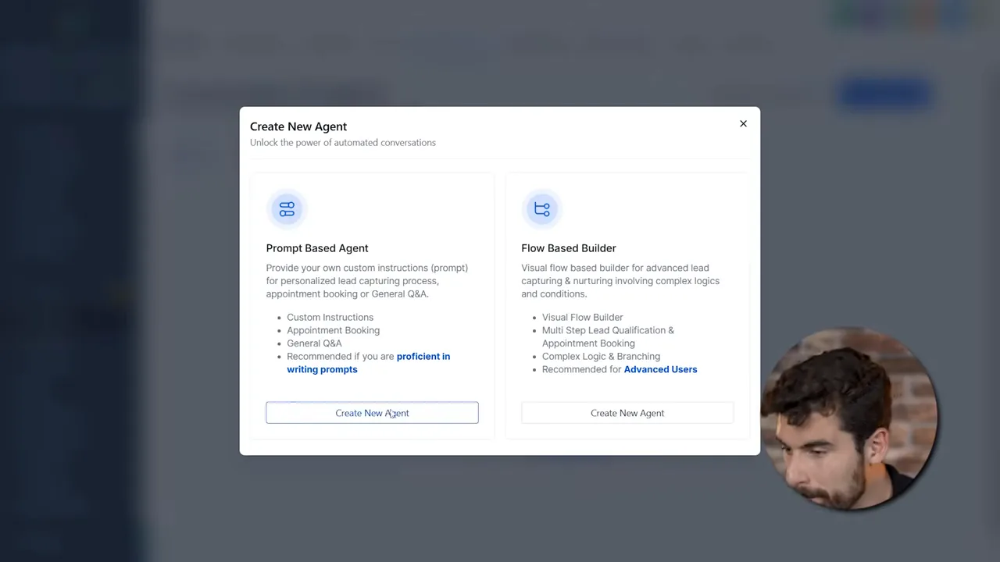
왜 돈을 내고, 무엇을 꼭 지켜야 하나요
업체 입장에서 보면 안 할 이유가 없어요. 돈을 더 쓰라는 게 아니라, 옛 리드가 고객이 됐을 때만 돈을 받기 때문이에요. 써 보지도 않을 소프트웨어값을 내는 게 아니라, 자기가 벌 때만 내는 거라 서로 이득이에요.
꼭 지킬 규칙이 하나 있어요. 그 업체에서 연락받겠다고 이미 수신 동의를 한 사람, 즉 업체 자신의 옛 리드에게만 보내요. 온라인에서 산 명단은 절대 쓰지 않아요. 문자 관련 규정은 나라마다 다르니 일하는 지역의 규정을 확인하고, 수신 거부를 쉽게 할 수 있는 방법을 항상 줘야 해요.
얼마나 벌고, 몇 등급인가요
성과에 따라 받기 때문에 꽤 넉넉히 받을 수 있어요. 아래 화면처럼 예약이 잡히고 실제로 온 건당 50달러에서 200달러까지예요. 업체가 파는 게 무엇이냐에 따라 달라요.
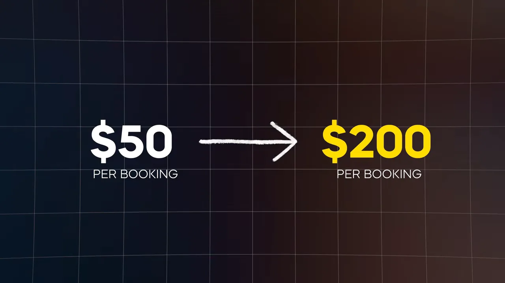
고객 몇 곳만 잡아도 월 1만 달러 수준이 될 수 있다고 해요. AI가 대화를 맡으니 고객이 늘어도 하루 종일 일하게 되진 않아요. 시작은 첫 방법보다 세팅이 조금 더 필요해요. 도구와 대화 흐름을 배워야 해서 일주일쯤 걸린다고 해요.
경쟁은 아래 막대에서 노랑, 중간보다 조금 낮은 쪽이에요. 부동산 아이디어보다는 알려져 있고 이미 '리드 재활성화'를 파는 사람도 있어요. 하지만 방치된 리드를 가진 동네 가게가 제대로 해 주려는 사람보다 훨씬 많아서, 수요가 공급보다 커요.
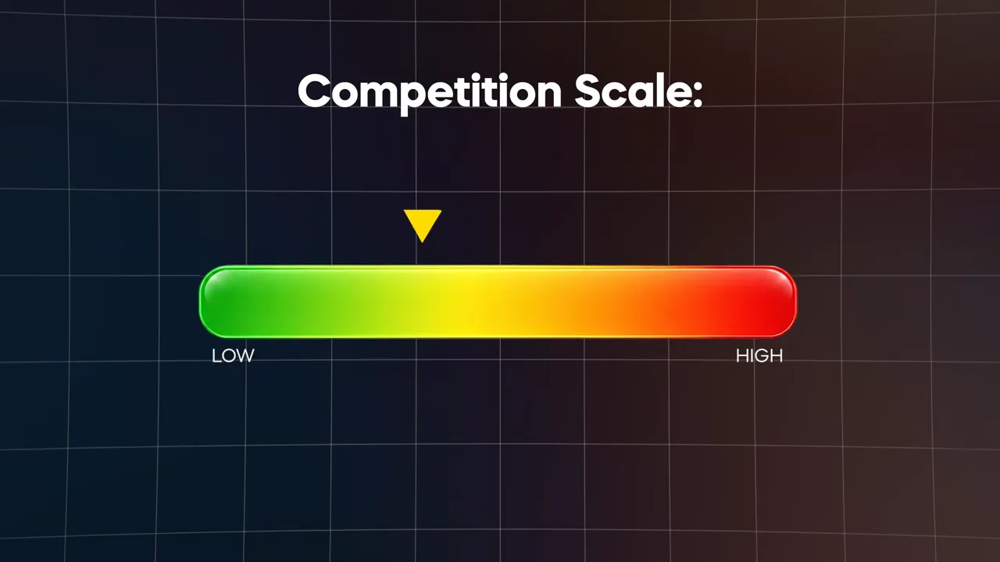
단점은 세팅이 조금 더 들고 경쟁도 조금 더 있다는 것뿐이에요. 그래서 A에 가까웠지만 B등급이에요.
동네 가게 웹사이트를 AI로 새로 만들어 주기
네 번째 방법은 Mark예요. 동네 가게의 형편없는 웹사이트를 고객을 실제로 데려오는 사이트로 바꿔 주고 돈을 받는 일이에요. 동네 가게 대부분은 자기 사이트가 나쁘다는 걸 알아요. 느리고, 2003년에 만든 것처럼 보이고, 휴대폰에서는 쓸 수가 없어요. 그런데 새로 만들려면 디자이너를 찾고, 몇 주 기다리고, 수천 달러를 내야 해서 그냥 둬요. 이제 AI가 몇 분 만에 요즘 웹사이트를 만들 수 있으니, 에이전시 가격의 일부만 받고 고쳐 줘도 이익이 남아요.
시연: 지도에서 찾고, AI 빌더로 만들어요
1단계는 사이트가 나쁜 동네 가게를 찾는 거예요. Mark는 Google 지도에서 'gardeners in kent'(켄트의 정원사)를 검색해요. 아래 결과 목록에 Biddenden Arboriculture, Kent GardenScapes, ‘SJH Garden Solutions’ 같은 업체가 별점과 함께 나와요. 'Website' 버튼을 눌러 몇 곳 둘러보면, 낡았거나 느리거나 모바일에서 제대로 안 되는 사이트가 금방 보여요.
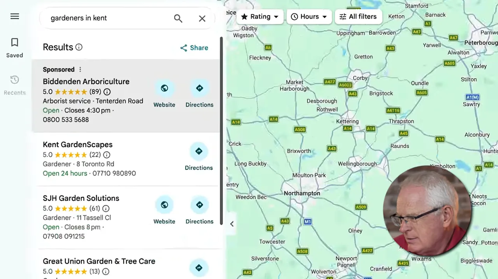
2단계는 AI 웹사이트 빌더로 새 사이트를 만드는 거예요. 빌더가 어떤 사이트인지 묻는 칸에 'modern, mobile-friendly website for a gardening business in Kent, England'(켄트의 정원 관리 업체를 위한 현대적이고 모바일 친화적인 사이트)라고 적어요. 아래 화면이 그 입력 단계예요. 이어서 그 업체의 서비스, 영업시간, 후기를 살펴보고 프롬프트에 다 적어요. 자세히 줄수록 결과가 좋아요.
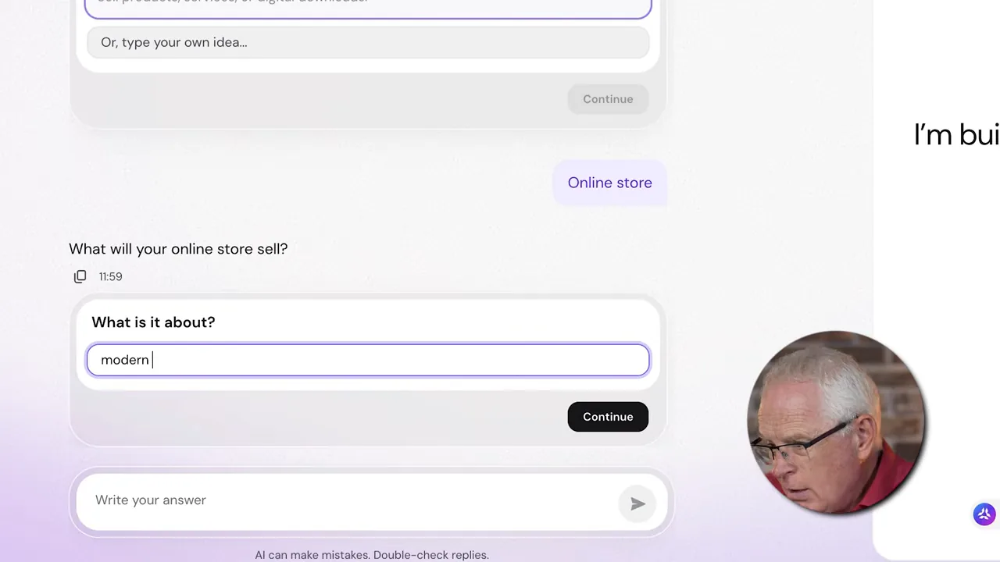
엔터를 누르면 레이아웃, 문구, 이미지까지 갖춘 사이트가 나와요. 아래 화면 왼쪽 위 로고를 보면 시연 도구는 Hostinger의 AI Builder예요. 가운데에 'A little care. A greener garden. More time for you.'라는 큰 문구와 'Book a garden visit' 버튼이 생겼어요. 왼쪽 대화창에는 AI가 '서비스 정보, 사진 갤러리, 예약·문의 양식을 넣었고, 후기 별점은 실제 수치를 받을 때까지 비워 뒀다'고 보고해요. 고칠 게 있으면 직접 끌어다 옮기거나 AI에게 말로 시키면 돼요.
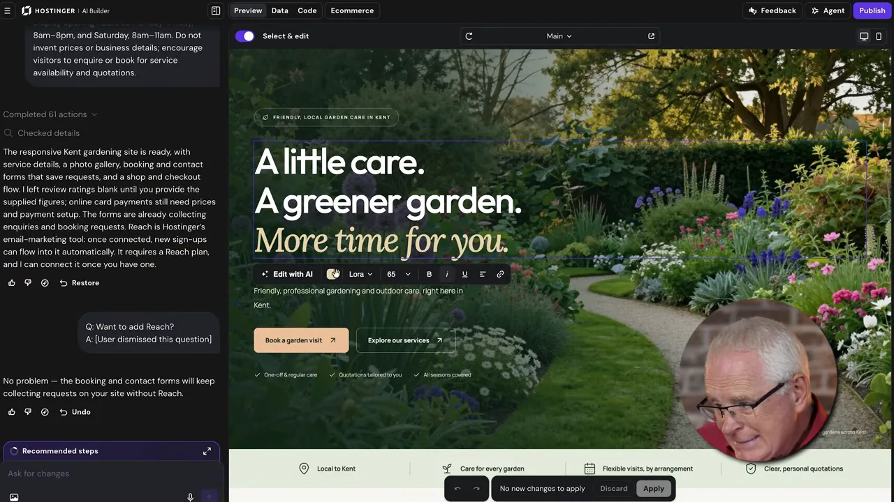
아래 화면은 옛 사이트와 새 사이트를 나란히 놓은 비교예요. 왼쪽 ‘SJH Garden Solutions’의 옛 사이트는 검은 배경에 빨간 글씨가 촘촘하고, 오른쪽 새 사이트는 큰 사진과 짧은 문구 위주예요. Mark는 '밤과 낮 차이'라고 하고, 휴대폰 화면에서도 거의 완벽하게 보인다고 확인해요.
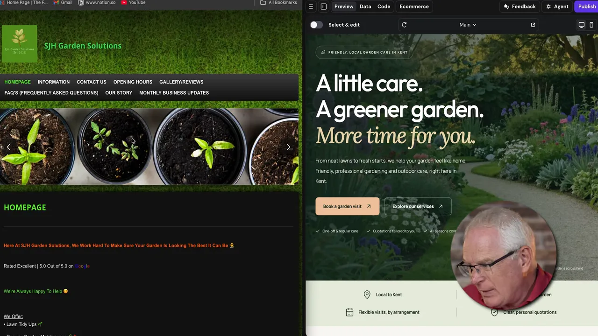
무료 샘플로 보내고, 월 관리로 이어 가요
3단계는 무료 샘플로 업체에 보내는 거예요. 아래 메일 제목은 'I made you a free website...'(무료로 웹사이트를 만들어 봤어요)이고, 본문은 '사이트가 모바일에서 잘 안 되는 것 같아 간단히 새로 만들어 봤어요. 이렇게 될 수 있어요. 수정도 기꺼이 해 드릴게요'예요.
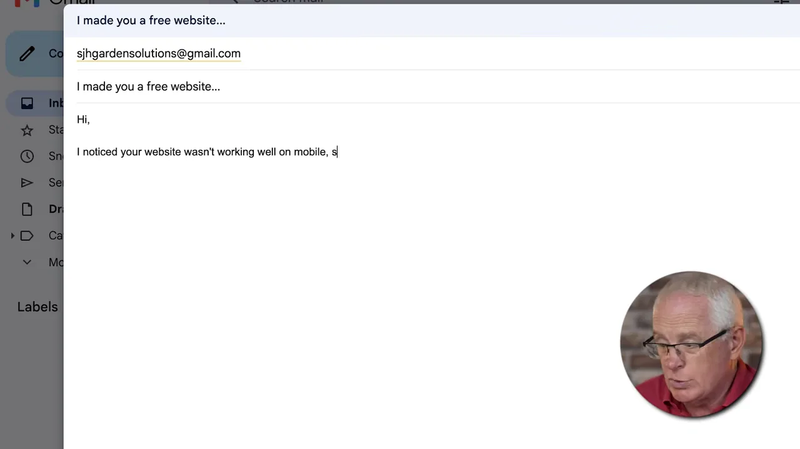
4단계는 업체가 마음에 들어 하면 완성해서 공개하는 비용을 받고, 이후 월 관리를 제안하는 거예요. 동네 가게는 새 사이트에 보통 수백~수천 달러를 내고, 이건 에이전시보다 훨씬 싸요. 여기에 호스팅·업데이트·소소한 수정 월 요금을 붙이면 일회성 일이 반복 수입이 돼요. 아래 화면 가격표에는 '$1000+'가 붙어 있어요.
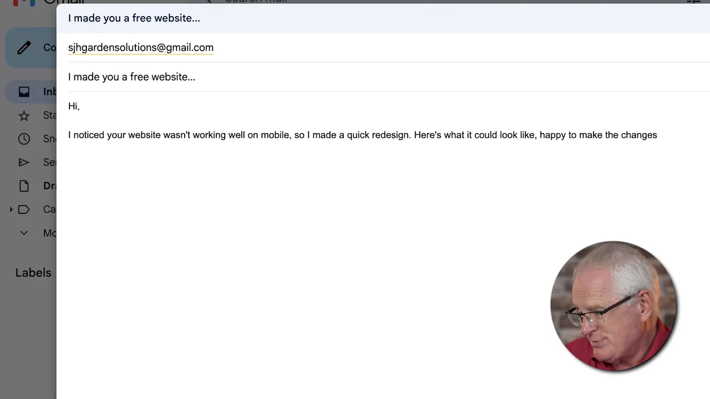
판정: B와 C 사이
시작은 바로 할 수 있어요. 디자인은 AI가 하니 배울 게 많지 않아요. 진짜 배울 건 동네 가게 사이트가 제 역할을 하는 조건이에요. 서비스가 분명하고, 연락처가 찾기 쉽고, 모바일 화면이 좋아야 해요. 이번 주에 첫 샘플을 만들 수 있어요.
경쟁은 많아요. 이미 웹사이트를 만드는 사람이 많고 AI 덕에 누구나 쉬워졌어요. 하지만 대부분은 '보기 좋은' 사이트만 만들어요. 고객이 전화하거나 예약하게 만드는 사이트에 집중하면 눈에 띈다고 해요. 단점은 붐빈다는 것, 그리고 다른 서비스처럼 월 관리 고객으로 키우지 않으면 대부분 일회성이라는 거예요. Mark는 B와 C 사이에서 고민하다 규칙을 살짝 깨고 두 줄 사이에 카드를 붙여요. 아래 판에서 'AI Website Makeovers' 카드가 B와 C 경계에 걸쳐 있어요.
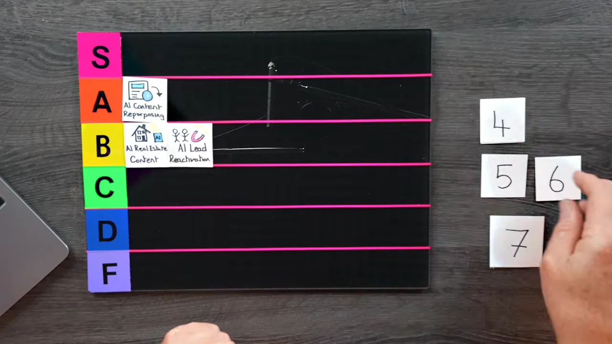
카메라 없이 AI로 UGC 광고 만들기
다섯 번째 방법은 E-Man이에요. 브랜드가 TikTok과 Instagram에 거는 광고를, 카메라도 없이 인플루언서가 아니어도 만들어 주고 돈을 받는 일이에요. E-Man은 예전에 마케팅 에이전시를 했어요. 그때는 고객이 새 광고를 원하면 디자이너, 카피라이터, 영상 편집자가 다 필요했어요.
특히 UGC(User-Generated Content) 광고, 즉 일반인처럼 보이는 사람이 제품을 뜯고 써 보는 광고는 더 번거로웠어요. 제품을 크리에이터에게 보내고, 촬영을 기다린 뒤에야 그 영상으로 광고를 만들 수 있었어요. 느리고 비쌌고, 광고가 먹힐지 알기도 전에 매번 시간과 돈이 들었어요. 지금은 노트북으로 오후 한나절에 10개 넘는 변형을 훨씬 싸게 만들 수 있다고 해요.
시연: 아바타와 제품을 올리고, 장면을 글로 적어요
1단계는 AI 광고 제작 도구를 고르는 거예요. 종류가 많고, 시연은 Higgsfield이지만 단계는 대부분 비슷하다고 해요. 아래 화면이 Higgsfield의 광고 제작 화면이에요. 위에 여러 제품 광고 예시가 있고 'TURN ANY PRODUCT INTO READY TO POST CONTENT'(어떤 제품이든 바로 올릴 콘텐츠로)라는 문구가 있어요. 아래 'EXPLORE TEMPLATES'에는 사람이 제품을 들고 말하는 UGC 템플릿이 줄지어 있어요.
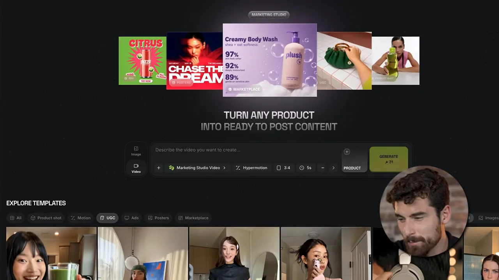
2단계는 필요한 자료를 올리는 거예요. 아바타(광고에 나올 인물) 이미지 하나와 제품 사진 몇 장이에요. 아래 업로드 창에 분홍색 립 플럼퍼 제품 사진이 올라가 있어요. E-Man이 미리 찾아 둔 제품이에요.
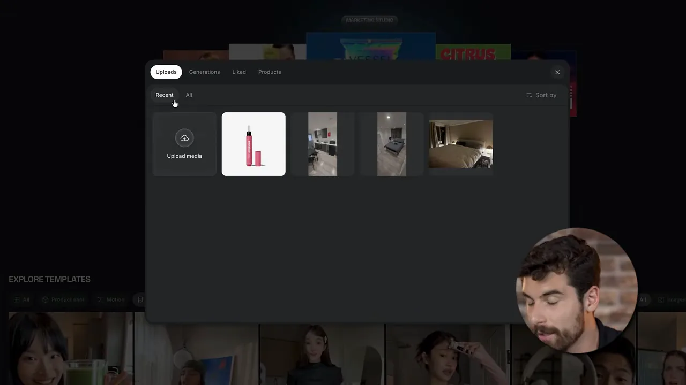
3단계는 인물이 할 행동과 대사를 글로 적는 거예요. 아래 입력창 첫 문단이 행동이에요. '여자가 침대에 앉아 제품을 카메라에 보여 주고 조금 신난 표정을 지어요. 뚜껑을 열고 말하면서 바른 뒤 엄지를 들어요.' 두 번째 문단이 대사예요. '다들 내 입술에 뭘 발랐냐고 물어봐서, 이거예요.' 오른쪽 'GENERATE' 버튼을 누르면 영상이 만들어져요.
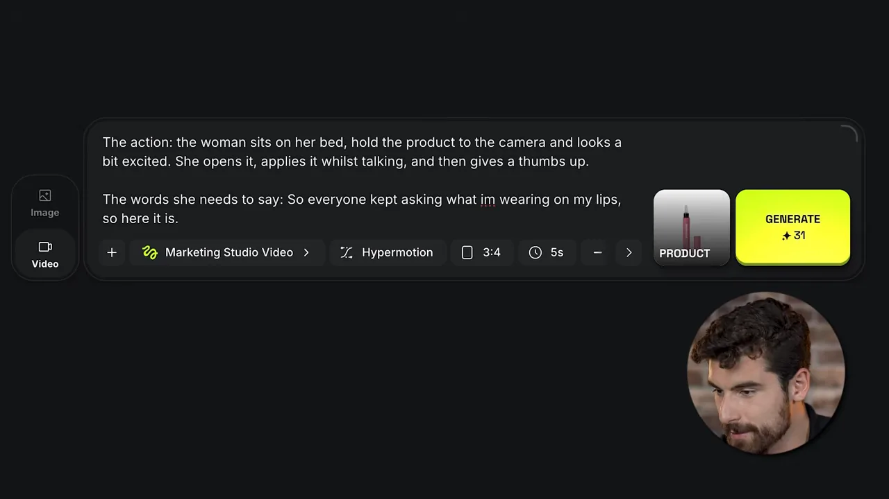
결과가 아래 영상이에요. 클로즈업한 입술에 분홍 플럼퍼를 바르는 장면이고, 인물이 대사를 말해요. E-Man은 꽤 잘 나왔다고 평가해요. 실제로 한다면 이 영상을 브랜드에 보내 더 만들어 달라고 돈을 낼 의향이 있는지 물어요.
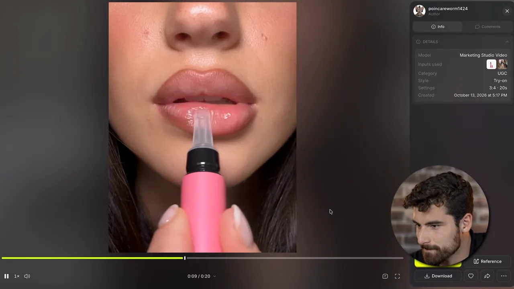
E-Man은 이것도 Mark의 웹사이트 아이디어처럼 '가치를 먼저 보여 주는' 접근이라고 말해요. 그리고 첫 버전을 그냥 올리면 안 된다고 강조해요. 제품이 맞는지, 광고 속 주장이 사실인지, 브랜드 이미지와 맞는지 하나하나 확인해야 해요.
얼마나 벌고, 몇 등급인가요
E-Man은 여기서 이야기가 진지해진다고 말해요. 브랜드는 실제 UGC 크리에이터에게 영상 하나에 100달러에서 600달러 이상을 줘요. 크리에이터가 누구인지, 영상을 어디까지 쓸 수 있는지(사용권)에 따라 달라요. 아래 화면이 그 범위예요.
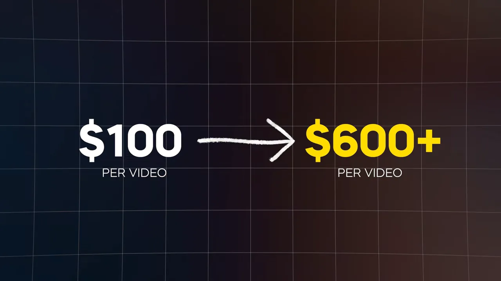
시작 속도는 두 가지로 나눠 봐야 해요. 보기 좋은 광고는 빠르고 쉽게 만들어요. 하지만 '팔리는' 광고는 다른 기술이에요. 훅, 앵글, 사람들이 스크롤을 멈추게 하는 요소를 배워야 해요.
경쟁은 오늘 나온 아이디어 중 가장 심해요. AI 광고가 주목받으면서 하겠다는 사람이 늘었어요. 시장이 커서 자리는 있지만 붐비는 방에 들어가는 셈이에요. 그래도 나쁜 아이디어는 아니에요. 이 판에서 수입 잠재력이 가장 크고, 브랜드는 매주 새 광고가 필요해서 수요가 끊기지 않고, 돈도 매달 들어와요. 그래서 잠재력 기준으로 A등급을 주지만 큰 경고를 붙여요. 광고가 실제로 어떻게 작동하는지 배울 생각이 있을 때만 A예요. 경험 없이 이번 주에 바로 시작하고 싶은 사람에게는 더 험한 길이에요.
고객 문의에 답하는 AI 챗봇 세팅해 주기
여섯 번째 방법은 Mark예요. AI로 사업체 고객의 질문에 대신 답해 주고 돈을 받는 일이에요. 직원 누구도 같은 답을 백 번째로 타이핑하지 않아도 되게 하는 거예요. 대부분의 사업체는 같은 질문을 계속 받아요. '주문 어디쯤이에요?', '반품 규정이 뭐예요?', '일요일에 여세요?' 같은 질문이에요. 아래 화면처럼 쇼핑 앱 알림으로 'Where's my order?'(주문 어디 있어요?)가 계속 날아오고, 누군가는 가게를 운영하면서 그걸 다 답해야 해요.
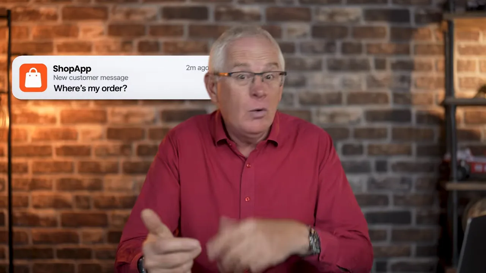
'그냥 업체가 AI 챗봇을 직접 달면 되지 않나?' 싶을 수 있어요. Mark는 경험상, 아무 학습 없이 웹사이트에 던져 놓은 챗봇은 틀린 답을 하고, 그건 챗봇이 없는 것보다 나쁘다고 말해요. 정확한 정보와 맞는 말투로, 언제 사람에게 넘길지까지 제대로 세팅하는 게 업체가 돈을 내는 이유예요.
시연: 자료를 먹이고, 규칙을 정하고, 시험해요
1단계는 AI 상담 도구를 고르는 거예요. Tidio나 Chatbase처럼 종류가 많고 작동 방식은 비슷해서, 몇 개 써 보고 일하고 싶은 업종에 맞는 걸 고르면 돼요. 시연은 Chatbase예요. 아래 홈페이지에 'Conversational agents for customer experience'(고객 경험을 위한 대화형 에이전트)라는 제목과, 오른쪽에 제품 안내 PDF(Portable Document Format)·웹 주소 같은 'Data sources'(자료 출처) 목록이 보여요.
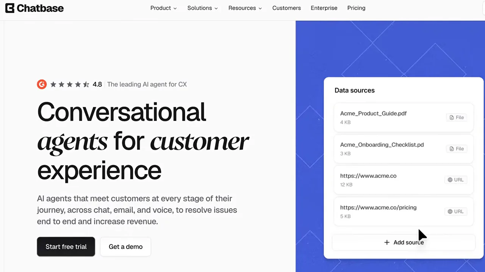
2단계는 그 사업체에 대해 아는 걸 모두 먹이는 거예요. 시연에서는 웹사이트 주소를 넣어 페이지를 읽게 해요. 아래 화면 'How would you like to train your AI Agent?'(AI 에이전트를 어떻게 학습시킬까요?)에 'www.apple.com'을 넣었고, 그 아래 'Other sources'로 Notion, 파일, 텍스트도 추가할 수 있어요. 정보를 많이 줄수록 답이 좋아지니, FAQ(Frequently Asked Questions)와 반품 규정을 내려받아 넣는 것도 좋다고 해요. 시연은 속도를 위해 주소만 넣었어요.
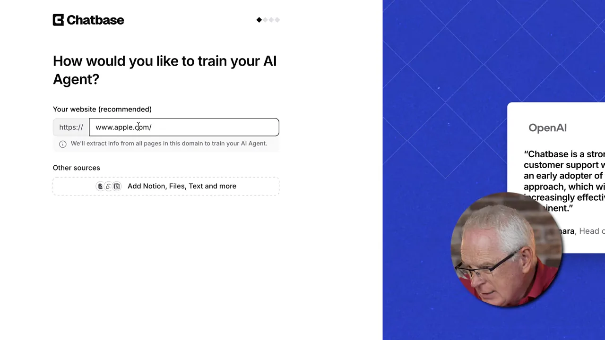
3단계는 규칙을 정하고 시험하는 거예요. 아래 'Customize your agent's personality'(에이전트 성격 정하기) 칸에 Mark가 적는 지침은 이래요. '너는 고객 지원 도우미야. 답은 짧고 친절하게. 제공된 정보로만 답해. 모르면 모른다고 하고 사람에게 연결해 주겠다고 해.' Mark는 '제공된 정보로만'이 중요하다고 강조해요.
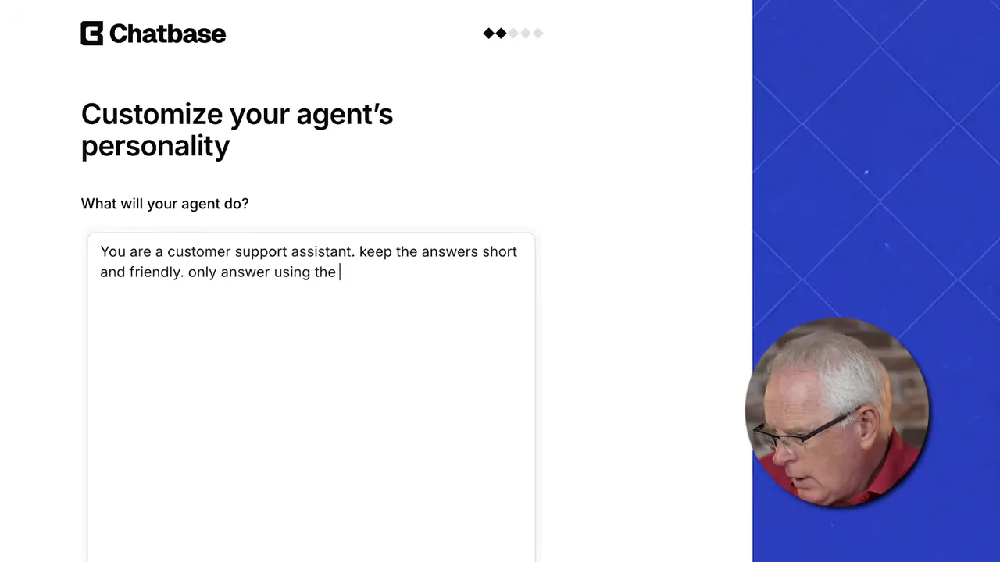
그리고 가장 중요한 부분, 대부분이 건너뛰는 테스트예요. '반품 규정이 뭐예요?'라고 물으니 아래처럼 답했어요. '대부분의 상품은 배송 후 14일 안에 이유 없이 전액 환불로 반품할 수 있어요. 온라인 주문 상태 페이지, 전화, 영국 Apple Store 매장에서 시작할 수 있어요.' Mark는 이게 업체의 실제 규정과 정확히 맞는다고 확인해요.
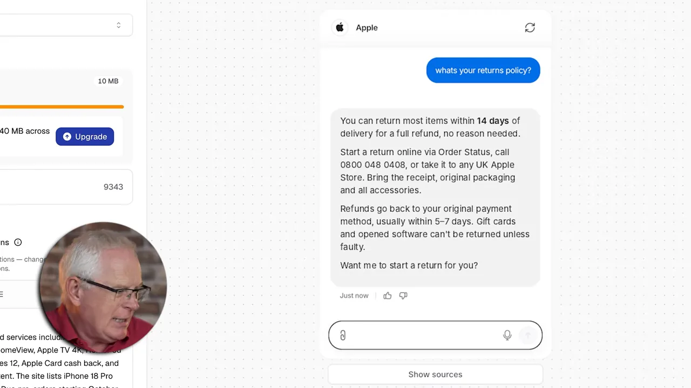
시간을 들여 질문을 최대한 많이 하고 답을 다시 확인해야 해요. 봇이 답을 지어내면 그게 업체가 곤란해지는 길이에요.
얼마나 벌고, 몇 등급인가요
수입은 보통 일회성 세팅비와, 계속 업데이트해 주는 월 요금이에요. 이 방법은 구체적인 금액을 말하지 않아요. 대부분의 도구는 코딩 없이 오후 한나절이면 세팅돼요. 그래서 진짜 익힐 건 좋은 지시문을 쓰는 법과 봇을 제대로 시험하는 법이에요.
경쟁은 중간~높음이에요. 챗봇은 이제 어디에나 있고 업체가 직접 가입할 수도 있어요. 하지만 솔직히 대부분은 세팅이 엉망이라, 답을 정확하게 맞추고 가드레일을 넣고 계속 업데이트하면 확실히 눈에 띈다고 해요. 단점은 업체가 도구를 직접 사기 쉽다는 것, 그리고 봇이 틀리면 탓이 나에게 온다는 거예요. 그래서 B등급이에요.
여섯 방법 한눈에 보기
두 사람이 매긴 결과를 숫자와 함께 모으면 이래요. 금액은 영상이 말한 대략의 범위이고, 모두 미국 달러예요.
| 방법 | 버는 방식 | 시작 속도 | 경쟁 | 등급 |
|---|---|---|---|---|
| 부동산 사진·영상 | 묶음당 약 100달러, 리테이너로 월 5천~1만 달러 | 이번 주 | 낮음(지금은) | B |
| 콘텐츠 재가공 | 고객당 월 수백~수천 달러 | 며칠 | 꽤 있음 | A |
| 문의 고객 재활성화 | 방문 예약 건당 50~200달러, 몇 곳이면 월 1만 달러 | 일주일쯤 | 중간, 수요가 더 큼 | B |
| 웹사이트 리뉴얼 | 사이트당 수백~수천 달러 + 월 관리비 | 바로 | 붐빔 | B와 C 사이 |
| AI 광고 소재 | 실제 크리에이터 시세 편당 100~600달러 이상, 월 수천 달러 | 만들기는 빠름, 팔리는 광고는 배워야 함 | 가장 붐빔 | A(경고) |
| AI 상담 챗봇 | 세팅비 + 월 요금 | 오후 한나절 | 중간~높음 | B |
판 위에 붙은 순서대로 그리면 아래와 같아요. A는 둘, B는 셋, 웹사이트는 B와 C 경계에 걸쳤어요.